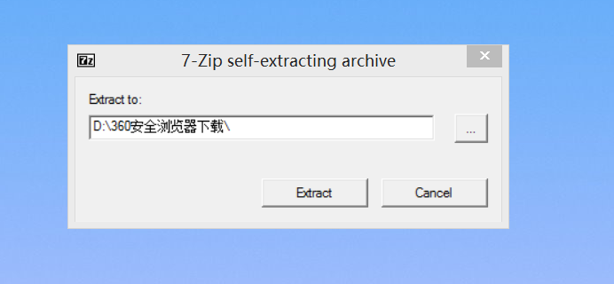
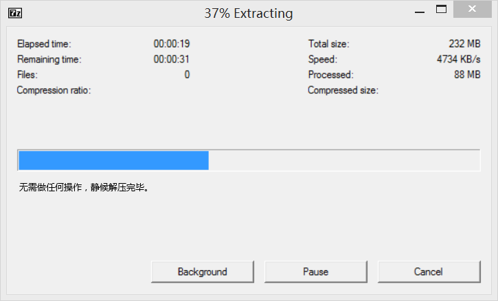
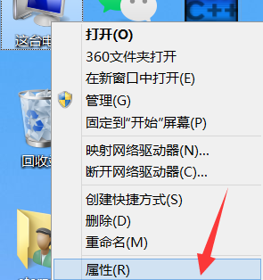
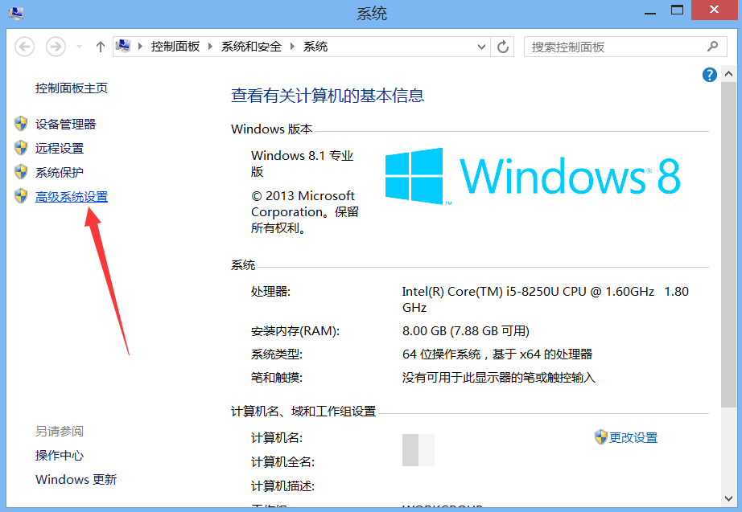
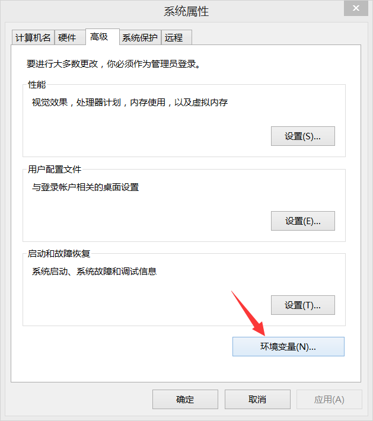
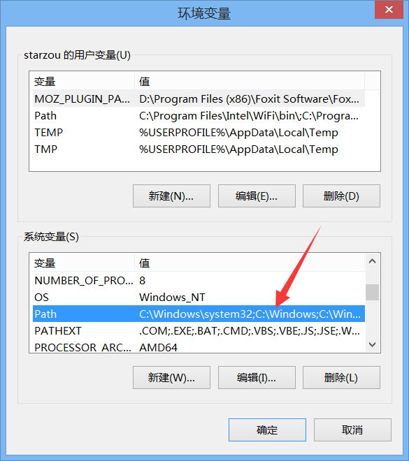
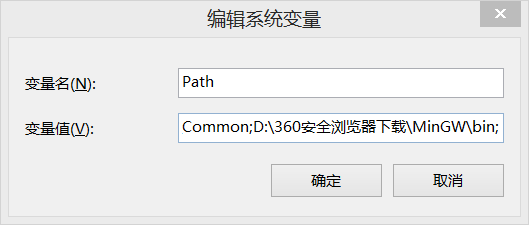

智斗（Match Wits）是BX团队成立前由BX独立编写的一款游戏。
在《智斗》中，玩家需要通过购买各种武器来抵御不断逼近的怪物大军。游戏的核心机制在于，玩家可以利用资源购买不同的武器，或是选择扩展怪物需要穿越的路程，以此作为战术布局的一部分。
随着游戏进度的不断推进，怪物的生命值（血量）会逐渐增厚，移动速度也会随之加快，这意味着它们将变得更加难以击败。这一变化要求玩家必须更加审慎地规划，合理购买武器和路程，让怪物尽可能不要到达终点。
在《智斗》中，当怪物成功到达游戏设定的终点时，就会减少玩家的生命值。生命值开始是100滴，理论上生命值可以无限大，但是由系统补给的生命值会到200时停止。因此，玩家不仅要关注武器，还要巧妙购买路程，延长怪物的行进路线，为自己争取更多的准备时间。这是一场智慧与策略的较量，玩家需要不断尝试和优化战术，才能在这场无尽的防守战中取得最终的胜利。
智斗这款游戏，类似于《植物大战僵尸》，不过取消了怪物吃植物的规则，加入了可延长的路程。
在这款游戏中，怪物的最高血量和怪物数量每5关就会升级，从10血到1000000血，怪物到达终点时扣除的血量也会变高。
如果一个怪物到达终点时扣除的血量很高，那么理论上速度也会越快（因为速度是由掉血量决定的），这就需要玩家尽量利用路程和武器去让怪物不到达终点。
A: 智斗游戏依赖于G++编译器。如果你的电脑没有或无法正常使用G++，游戏将无法运行。请使用以下步骤安装G++（这里以Windows 8.1为例，其他版本同理。）
下载MinGW
你需要通过 蓝奏云网盘(密码：mingw) 下载MinGW工具，MinGW内包含G++。
点击下载按钮后，等待一会儿即可开始下载。
安装MinGW
选择好安装的位置，然后开始解压。
解压完成后，G++就已经成功安装到您的电脑中了。
A: 安装好了G++，并不意味着游戏可以直接启动。你需要在Windows的环境变量中添加G++的环境变量。否则系统并不能读取到G++，导致无法启动游戏。启动器在开启时就已写明如何添加G++的环境变量，这里再次教学。
右键“此电脑”（或“计算机”“这台电脑”），打开“属性”
打开左侧的“高级系统设置”（部分Windows 10 新版或Windows 11在设置右侧）
在新弹出的窗口中，点入“环境变量”
在下面的系统变量栏中，找到Path变量进入添加（Windows 10及以上版本为一个列表，这个时候可以点击右侧的新建按钮添加），你需要在现在的字符串最后添加一个地址，为[MinGW目录位置\MinGW\bin]，记住最后需要输入分号。
 恭喜你，现在G++已经配置完毕，可以正常启动游戏了。
A: 是的。因为启动器在自动释放游戏源文件时，会在当前目录下创建一个名为“Cache”的目录，如果强制关闭启动器，那么目录将不会被删除，下次打开启动器时可能会因文件冲突而出错。
此外，使用程序内置的退出按钮退出程序，在任何时候都是一个好习惯。
使用蓝奏云网盘进行下载，方便快捷。
网盘下载智斗依赖于启动器，请下载启动器打开游戏，并请注意：游戏依赖于G++，如果你的电脑没有G++或无法正常使用G++，游戏将无法运行。这就需要下载G++。
特别地，如果电脑中存在G++，但是环境变量中没有G++，请通过启动器的提示或该网站“常见问题”一栏的教学添加环境变量。
你也可以下载独立纯享版，但BX团队不保证该版本的稳定性。
如果您有任何问题或疑问，请随时发送邮件到341723147@qq.com或通过QQ群与我们联系